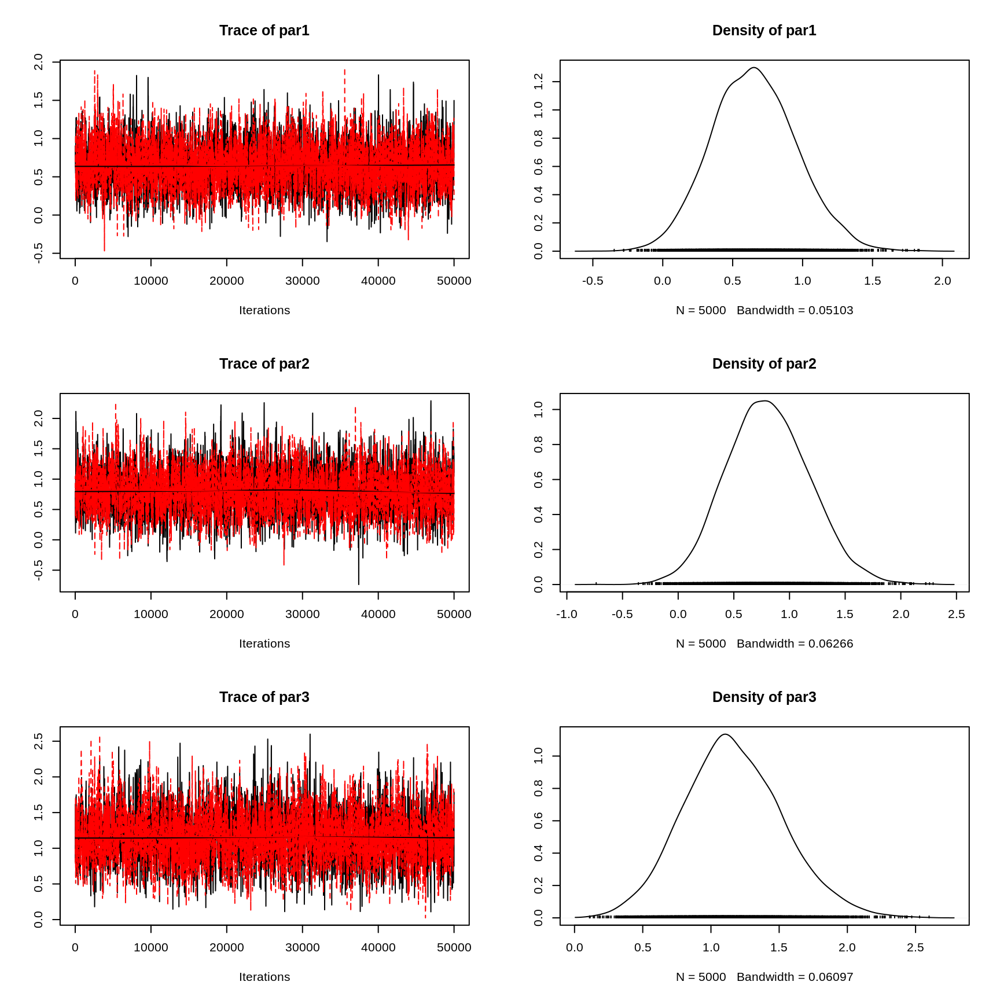
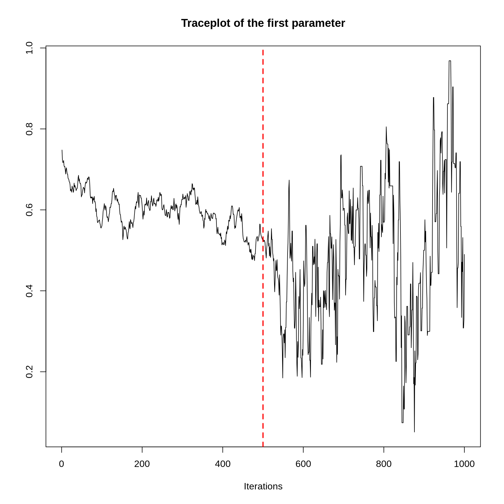
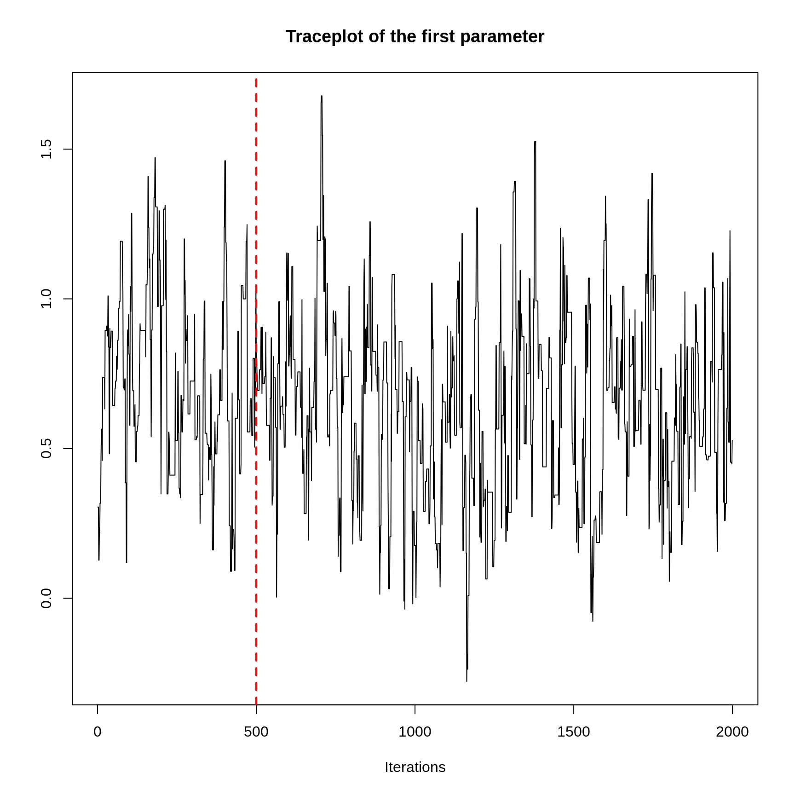

vignettes/workflow-with-fmcmc.Rmd
workflow-with-fmcmc.RmdWe start by loading the dataset that the mcmc package includes. We will use the logit data set to obtain a posterior distribution of the model parameters using the MCMC function.
library(fmcmc)
data(logit, package = "mcmc")
out <- glm(y ~ x1 + x2 + x3 + x4, data = logit, family = binomial, x = TRUE)
beta.init <- as.numeric(coefficients(out))To be able to use the Metropolis-Hastings MCMC algorithm the function should be (in principle) the log unnormalized posterior. The following block of code, which was extracted from the mcmc package vignette “MCMC Package Example” creates the function that we will be using
lupost_factory <- function(x, y) function(beta) {
eta <- as.numeric(x %*% beta)
logp <- ifelse(eta < 0, eta - log1p(exp(eta)), - log1p(exp(- eta)))
logq <- ifelse(eta < 0, - log1p(exp(eta)), - eta - log1p(exp(- eta)))
logl <- sum(logp[y == 1]) + sum(logq[y == 0])
return(logl - sum(beta^2) / 8)
}
lupost <- lupost_factory(out$x, out$y)Let’s give it a first try. In this case we will use the beta estimates from the estimated GLM model as a starting point for the algorithm, and we will ask it to sample 1e4 points from the posterior distribution (nsteps).
# to get reproducible results
set.seed(42)
out <- MCMC(
initial = beta.init,
fun = lupost,
nsteps = 1e3
)Since the resulting object is of class mcmc (from the coda R package), we can use all the functions included in coda for model diagnostics:
So this chain has very poor mixing, so let’s try again by using a smaller scale for the normal kernel proposal moving it from 1 (the default value) to .2:
# to get reproducible results
set.seed(42)
out <- MCMC(
initial = beta.init,
fun = lupost,
nsteps = 1e3,
kernel = kernel_normal(scale = .2)
)The kernel_normal, which is the default kernel in the MCMC function, returns an object of class fmcmc_kernel. In principle it consists on a list of two functions that are used by the MCMC routine: proposal, the proposal kernel function, and logratio, the function that returns the log of the Metropolis-Hastings ratio. We will talk more about fmcmc_kernel objects later. Now, let’s look at the first three variables of our model:
plot(out[,1:3])Better. Now, ideally we should only be using observations from the stationary distribution. Let’s give it another try checking for convergence every 1,000 steps using the convergence_geweke:
# to get reproducible results
set.seed(42)
out <- MCMC(
initial = beta.init,
fun = lupost,
nsteps = 1e4,
kernel = kernel_normal(scale = .2),
conv_checker = convergence_geweke(200)
)## Convergence has been reached with 200 steps. avg Geweke's Z: 1.1854. (200 final count of samples).A bit better. As announced by MCMC, the chain has reach a stationary state. With this in hand, we can now rerun the algorithm such that we start from the last couple of step of the chain, this time, without convergence monitoring as it is no longer necessary.
We will increase the number of steps (sample size), use 2 chains using parallel computing, and add some thinning to reduce autocorrelation:
# Now we change the seed so we get a different stream of
# pseudo random numbers
set.seed(112)
out_final <- MCMC(
initial = out, # Automagically takes the last 2 points
fun = lupost,
nsteps = 5e4, # Increasing the sample size
kernel = kernel_normal(scale = .2),
thin = 10,
nchains = 2L, # Running parallel chains
multicore = TRUE # in parallel.
)Observed that, instead of specifying what are the 2 starting points for each chain, we passed the out to the initial set of parameters. By default, if initial is of class mcmc, MCMC will take the last nchains points from the chain as starting point for the new sequence. If initial is of class mcmc.list, the number of chains in initial must match the nchains parameter. We now see that the output posterior distribution appears to be stationary
plot(out_final[, 1:3])
summary(out_final[, 1:3])##
## Iterations = 10:50000
## Thinning interval = 10
## Number of chains = 2
## Sample size per chain = 5000
##
## 1. Empirical mean and standard deviation for each variable,
## plus standard error of the mean:
##
## Mean SD Naive SE Time-series SE
## par1 0.6575 0.3005 0.003005 0.004844
## par2 0.7998 0.3696 0.003696 0.006680
## par3 1.1719 0.3629 0.003629 0.006884
##
## 2. Quantiles for each variable:
##
## 2.5% 25% 50% 75% 97.5%
## par1 0.0924 0.4509 0.6445 0.8535 1.275
## par2 0.1084 0.5457 0.7846 1.0470 1.560
## par3 0.5181 0.9193 1.1533 1.4079 1.939fmcmc_kernel objects are environments that are passed to the MCMC function. While the MCMC function only returns the mcmc class object (as defined in the coda package), users can exploit the fact that the kernel objects are environments to reuse them or inspect them once the MCMC function returns.
This could be particularly useful in the case of adaptive kernels as users can review the covariance structure (for example) or other components of the kernel.
To illustrate this, let’s re-do the MCMC chain of the previous example but using an adaptive kernel instead, in particular, Haario’s 2010 adaptive metropolis.
khaario <- kernel_adapt(freq = 1, warmup = 500)This kernel object will be updated at every step (freq = 1) and adaptation will start from step 500 (warmup = 500). We can see that some of its components haven’t been initialized or have default starting values before the call of the MCMC function:
# Number of iterations (absolute count, starts in 0)
khaario$abs_iter## [1] 0
# Variance covariance matrix (is empty... for now)
khaario$Sigma## NULLLet’s see how it works:
set.seed(12)
out_harrio_1 <- MCMC(
initial = out,
fun = lupost,
nsteps = 1000, # We will only run the chain for 100 steps
kernel = khaario, # We passed the predefined kernel
thin = 1, # No thining here
nchains = 1L, # A single chain
multicore = FALSE # Running in serial
)Let’s inspect the output and mark when the adaptation starts:
traceplot(out_harrio_1[,1], main = "Traceplot of the first parameter")
abline(v = 500, col = "red", lwd = 2, lty=2)
If we look at the khaario kernel, the fmcmc_kernel object, we can see that things changed from the first time we ran it
# Number of iterations (absolute count, the counts equal the number of steps)
khaario$abs_iter## [1] 999
# Variance covariance matrix (now is not empty)
(Sigma1 <- khaario$Sigma)## [,1] [,2] [,3] [,4] [,5]
## [1,] 0.031997432 -0.0029414698 -0.0044975559 -0.048761681 -0.007203362
## [2,] -0.002941470 0.0107696441 -0.0002261002 0.012565787 -0.011962297
## [3,] -0.004497556 -0.0002261002 0.0117665015 0.019705220 -0.003477701
## [4,] -0.048761681 0.0125657865 0.0197052196 0.108880548 -0.008469432
## [5,] -0.007203362 -0.0119622968 -0.0034777013 -0.008469432 0.027920650If we re-run the chain, using as starting point the last step of the first run, we can also continue using the kernel object:
out_harrio_2 <- MCMC(
initial = out_harrio_1,
fun = lupost,
nsteps = 2000, # We will only run the chain for 2000 steps now
kernel = khaario, # Same as before, same kernel.
thin = 1,
nchains = 1L,
multicore = FALSE
)Let’s see again how does everything looks like:
traceplot(out_harrio_2[,1], main = "Traceplot of the first parameter")
abline(v = 500, col = "red", lwd = 2, lty=2)
As shown in the plot, since the warmup period already passed for the kernel object, the adaptation process is happening continuously so we don’t see a big break at step 500 as before. Let’s see now the counts and the covariance matrix and compare it with the previous one:
# Number of iterations (absolute count, the counts equal the number of steps)
# This will have 1000 (first run) + 2000 (second run) steps
khaario$abs_iter## [1] 2998
# Variance covariance matrix (now is not empty)
(Sigma2 <- khaario$Sigma)## [,1] [,2] [,3] [,4] [,5]
## [1,] 0.072751923 0.004856583 0.03073121 -0.002196328 0.01505307
## [2,] 0.004856583 0.092261376 -0.02241129 -0.025737259 -0.03436184
## [3,] 0.030731206 -0.022411290 0.12486220 0.043613434 0.01059161
## [4,] -0.002196328 -0.025737259 0.04361343 0.208599307 -0.02180500
## [5,] 0.015053067 -0.034361841 0.01059161 -0.021804998 0.11058044
# How different these are?
Sigma1 - Sigma2## [,1] [,2] [,3] [,4] [,5]
## [1,] -0.040754491 -0.007798053 -0.03522876 -0.04656535 -0.02225643
## [2,] -0.007798053 -0.081491732 0.02218519 0.03830305 0.02239954
## [3,] -0.035228762 0.022185189 -0.11309570 -0.02390821 -0.01406931
## [4,] -0.046565353 0.038303046 -0.02390821 -0.09971876 0.01333557
## [5,] -0.022256430 0.022399544 -0.01406931 0.01333557 -0.08265979Things have changed since the last time we used the kernel, as expected. Kernel objects in the fmcmc package can also be used with multiple chains and in parallel. The MCMC function is smart enough to create independent copies of fmcmc_kernel objects when running multiple chains, and keep the original kernel objects up-to-date even when using multiple cores to run MCMC. For more technical details on how fmcmc_kernel objects work see the manual ?fmcmc_kernel or the vignette “User-defined kernels” included in the package vignette("user-defined-kernels", package = "fmcmc").